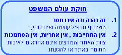

מכבי ת"א אלופת ישראל ואירופה !
עדכון אחרון:
29/06/2004 05:47:56
כניסות מאז 24/10/02:
|
|
למשלוח
מבחנים בפקס - סקר מרצים תשס"ג-תשס"ד:
ההמלצות
, הציונים - Excel
/ Html
|  |
|
29/06/2004 05:47:56 |
|
"נאמר - על דרך ההפלגה ואפשר שלא כל כך על דרך ההפלגה כי "תאונת דרכים" פירושה כל תאונה, בין שהיא תאונת דרכים ובין שאין היא תאונת דרכים" השופט חשין - ע"א 1109/00 |
|

|
צוות האתר: ליאור, בצלאל,
שמיל, דוד, רן,
אורטל, אורן, שירה, אורית, דנה, קובי, ויטה, אבינועם,
יעל
האתר פועל בשיתוף פעולה עם הפקולטה
למשפטים בר-אילן,
וממומן ומתוחזק ע"י אגודת הסטודנטים